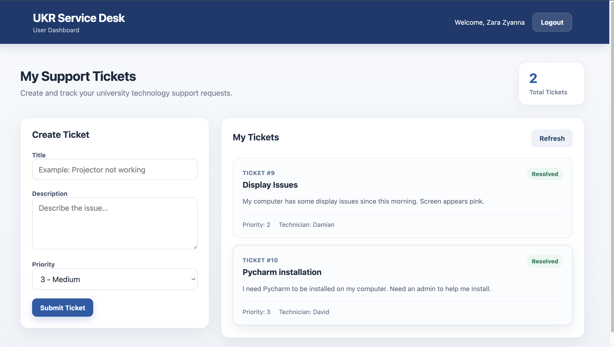
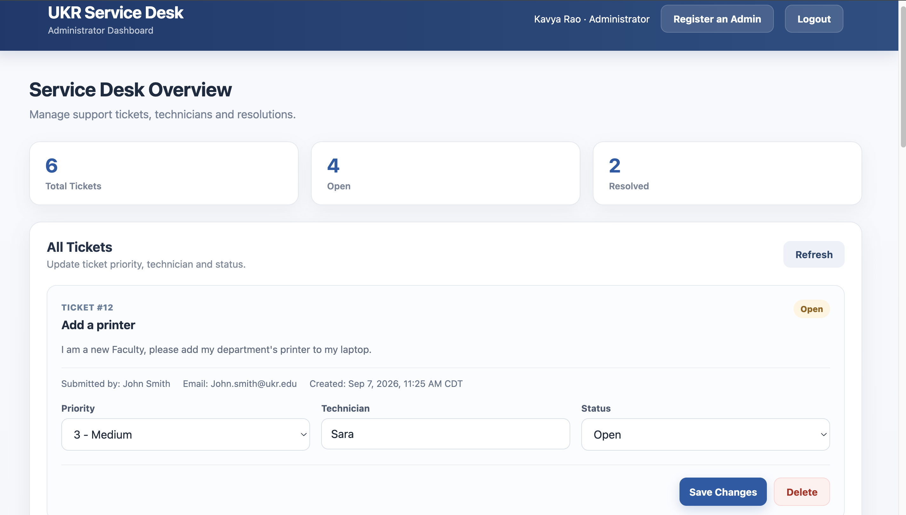

01
User Experience
Users can securely register, sign in, create support tickets, and monitor the status of their own requests.
FULL-STACK SOFTWARE ENGINEERING PROJECT
A secure service desk application that allows users to submit and track IT support requests while administrators manage tickets, technicians, priorities, and resolutions.
PROJECT OVERVIEW
UKR Service Desk is a full-stack application designed around a university IT support workflow. It combines a React interface with an ASP.NET Core Web API, PostgreSQL database, and secure role-based authentication.
Users can securely register, sign in, create support tickets, and monitor the status of their own requests.
Administrators can review requests from all users, assign technicians, update priorities, resolve tickets, and manage service desk activity.
ASP.NET Core Identity, JWT authentication, role authorization, and ticket ownership checks protect application resources.
APPLICATION
The application provides dedicated workflows for university users and service desk administrators.
Users receive a focused dashboard for creating support tickets and monitoring their progress without accessing tickets belonging to other users.

Administrators receive visibility across the service desk and can manage tickets from submission through resolution.

LIVE WORKFLOWS
These short recordings demonstrate the main user and administrator workflows in the UKR Service Desk application.
User sign-in, ticket submission, and ticket tracking.
Administrator ticket management, technician assignment, priority updates, and resolution workflow.
An authorized administrator creates another service desk administrator.
ARCHITECTURE
The frontend calls the ASP.NET Core API, which uses the service layer and EF Core to read and write ticket data in PostgreSQL.
ENGINEERING HIGHLIGHTS
Authenticated users receive signed JWTs that are validated by the ASP.NET Core backend for protected requests.
User and Admin roles control access to privileged operations and administrator API endpoints.
Ticket ownership is derived from the authenticated user's identity rather than trusting IDs supplied by the client.
ASP.NET Core controllers expose structured HTTP endpoints for authentication and ticket management.
EF Core handles ticket queries, relationships, database updates, and migrations.
Reusable React components, state management, routing, and API integration power the user experience.
TECHNOLOGY
PROJECT SOURCE
View the complete React frontend, ASP.NET Core backend, database migrations, authentication flow, and API implementation on GitHub.
View Project on GitHub